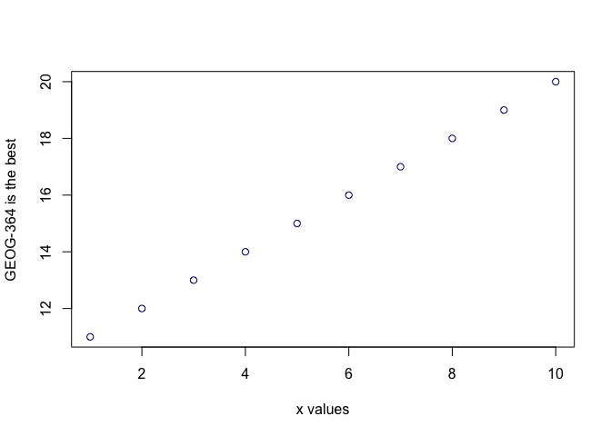

Tutorial 3a: The Console
GEOG-364 - Spatial Analysis
You should now have R-Studio open and be inside your Lab 1 R project. If you’re having issues at this point or haven’t managed to get to this step, STOP! Ask an instructor for help.
So now we finally get to do some R-coding. First watch the 5 min video above for some pointers. We will also go through the video more slowly here:
1. Using R as a calculator
1a. Basics
Remember that the aim of programming is to provide a language so you can ask your computer to do complex tasks. The console window (see Figure @ref(fig:tut1cfig2)) is like a phone call with your computer, where you “speak” in R.
- The computer has a little
>symbol to say it is listening/waiting for your command - You type in a command
- The computer tries to carry it out and will print the answer directly onto the screen
Let’s start by the simplest command possible. Try typing each of the following commands into your R console and pressing Enter
1+1When you press enter, it should give you the answer…. 2
1+1## [1] 2Note that spacing does not matter: 1+1 will generate the same answer as 1 + 1. When we get to text, capital letters DO matter.
When using R as a calculator, the order of operations is the same as you would have learned back in school, so use brackets to force a different order. For example, try these two commands
3 + 5 * 2and
(3 + 5) * 2We can also take shortcuts with our numbers. For example 1:5 means take all the numbers 1 2 3 4 5 (e.g. increment the integers one - to - five)
Try typing this command and make sure you understand the result.
(1 + 2) * 5:3## [1] 15 12 9We can use this trick to make our first plot! Try entering this command and see what happens. It should plot these numbers against each other
## x y
## 1 1 6
## 2 2 7
## 3 3 8
## 4 4 9
## 5 5 10plot(x= 1:5, y= 6:10,xlab="x-axis",ylab="y-axis")1b. Comparisons
We can also do comparisons in R - using the special symbols TRUE or FALSE (no quote marks, they are special).
Here we are asking R whether 1 is equal to 1.
# note two equals signs is read as "is equal to"
1 == 1 ## [1] TRUEWe could also have used
!=“Not equal to”<“Less than”<="Less than or equal to`>“Greater than”>=“Greater than or equal to”
Now ask the computer if the number 12 is less than or equal to the number 10.
2. What if I press Enter too soon? The console has a + symbol..
If you type in an incomplete command, R will understand and wait for you to complete it. For example, if you type 1 + and press enter, R will know that you are not finished typing. So it will move onto the next line but the > will have changed into a +, which means its waiting for you to complete your command.
If you want to cancel a command you can simply hit the “Esc” key or press the little stop symbol and R studio will reset.
Pressing escape isn’t only useful for killing incomplete commands: you can also use it to tell R to stop running code (for example if it’s taking much longer than you expect), or to get rid of the code you’re currently writing.
3. Functions/Commands
Watch this short video to learn three important facts about functions:

The power of R lies in its many thousands of these built in commands, or functions. In fact, we have already come across one - the plot command.
A function, or command is simply an action you can take - like pressing the square root button on a calculator.
A command is always followed by parentheses ( ), inside which you put your arguments. (e.g. the thing you want to take the square root of)
Try typing these EXACTLY into the console.
nchar("hello")- This will count the number of letters in the word “hello” (e.g. 5)
file.choose()- This will open up an interactive window (sometimes behind the studio screen), choose any file and it will print the location in the console. NOTE WE STILL NEED THE PARENTHESES, but there are no arguments so they are empty.
To understand what I mean about parentheses, try typing each of these commands exactly and see what happens.
# Typing this into the console will print out the underlying code
file.choose
# Typing it WITH parentheses will run the command.
file.choose()
# Typing a ? in front will open the help file for that command in the help quadrant
?file.chooseSometimes we need to give the command some additional information as an argument. Anything we wish to tell the command should be included inside the inside the parentheses (separated by commas). The command literally only knows about the stuff inside the parentheses.
sin(1) # trigonometry functions. Apply the sine function to the number 1.
log(10) # natural logarithm. Take the natural logarithm of the number 10.
nchar("hello") # Count the letters in the word helloWe can also add optional extra arguments. For example let’s improve our plot. This following command will plot the number 1 to 10 against the numbers 12 to 20, along with some axis labels. When you run this, the plot will show up in the plots tab.
# plot the numbers 1 to 10 against the numbers 11 to 20
plot(1:10,11:20,col="dark blue", xlab="x values",ylab="GEOG-364 is the best") 
If you are feeling lost, https://swcarpentry.github.io/r-novice-gapminder/01-rstudio-intro/ is a really good website which goes over a lot of this in more detail. A lot of this is based on their work.
4. Dealing with text
In R, the computer interprets most words as commands. But sometimes we need to actually input text, for example for a plot title. For the computer to understand text, you need quote marks. The computer will see anything without quote marks as a command.
For example, try typing print("Hello World") into the console and the computer should just repeat it back to you.Forget about the quotes and this happens..

Your screen after running the project
Your first error. The “unexpected symbol” it’s talking about is the computer thinking that Hello must be a command, then getting really confused by the space between Hello and World..
Variables
So now we can use R as a calculator and even add a few more complex commands. What we need to be able to do now is to save the results, or load in data so we can run more complex commands.
In R, we do this through assigning our results to a variable. e.g. we save the results of our command with a name, then in the future, instead of retyping the whole command, we simply type that name and R will recall the answer.
The symbol to store data into a variable is using the assignment arrow <-, which is made up of the left arrow and a dash. You can also use the equals sign, but it can cause complications later on. Try typing this command into the console:
x <- 1/50Notice that pressing enter did not print a value onto your screen as it did earlier. Instead, look down at the environment tab, you should notice that an x has turned up, with the result next to it.
So our variable x is now associated with the value 0.02, or 1/50. You can print a variable on screen by typing its name, no quotes, or by using the print command. Try printing out your variable.
x
# or
print(x)
# see what happens when you do this
print("x")This ‘x’ variable can be used in place of a number in any calculation that expects a number. Try typing
log(x)
# this is now the same as
log(1/50)The way R works is that first it looks for the commands on the right of the arrow. It runs all of them, calculates the result, then saves that result with the name on the left of the arrow. It does not save the command itself, just the answer. For example, in this case, R has no idea that x was created using maths, it just knows that it is equal to the number 0.02.
Reassigning/recyling variables
Notice also that variables can be reassigned. Type this into your console.
x <- 100
print(x)x used to contain the value 0.025 and and now it has the value 100.
Note, the letter x isn’t special in any way, it’s just a variable name. You can replace it with any word you like as long as it contains no spaces and doesn’t begin with a number.
for example
vlogbrothers.DFTBA <- "Dont forget to be awesome"
print(vlogbrothers.DFTBA)How you name stuff is up to you, , but be consistent. Different people use different conventions for long variable names, these include
- periods.between.words.1 (as you can see, I like this)
- underscores_between_words
- camelCaseToSeparateWords
Finally, R IS CASE SENSITIVE. X and x are different variables! Try these and you will see both appear separately in your environment tab.
h <- 1
H <- 2
ans <- h+H
print(ans)print(h)print(H)To delete a variable, you can use the rm() command e.g.
rm(x)and to clear everything, type
rm(list=ls())Combining variables
As I showed above, you can now use multiple variables together in more complex commands. For example, try these commands:
x <- 2
#Take the variable x, add 1 then save it to a new variable called y
y <- x + 1
# print the multiple of 2yx onto the screen
print(2*y*x)Now you can see that there are two variables in your environment tab, x and y. Where y is the sum of the contents of x plus 1.
You can even use this to change your original variable . Try typing the code below in a few times into the console and see what happens.
A short cut to do this is to type the commands the first time, then use the up-arrow on your keyboard to cycle back through previous commands you have typed
x <- x + 1 # notice how RStudio updates its description of x in the environment tab
x # print the contents of "x" onto the screenOur variables don’t have to be numbers. They could refer to tables of data, or a spatial map, or any other complex thing. We will cover this more in future labs.
Website created and maintained by Helen Greatrex. Website template by Noli Brazil